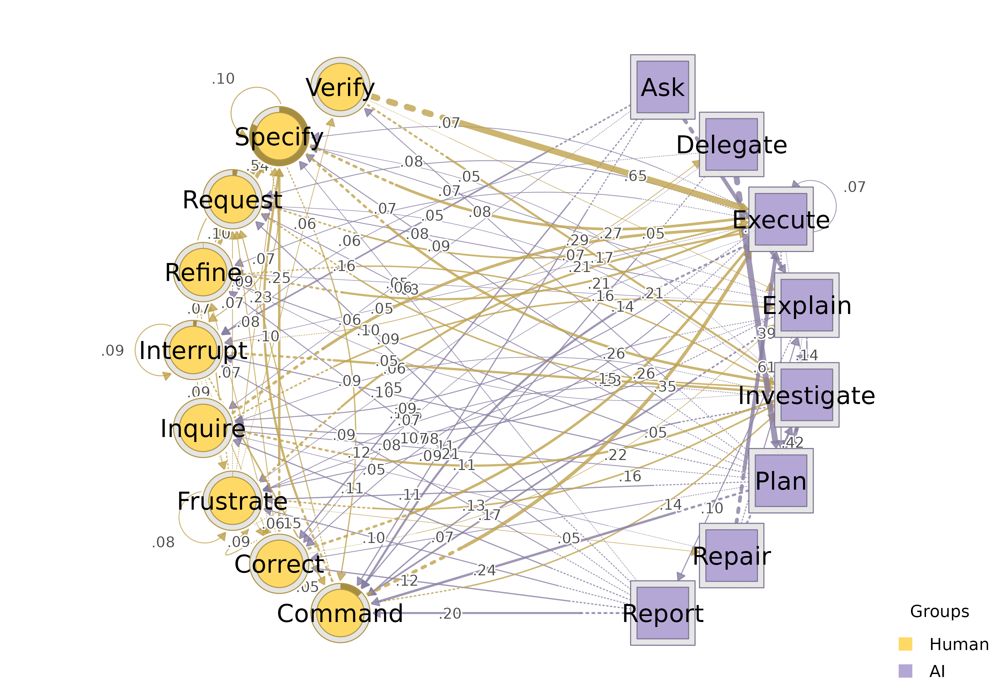
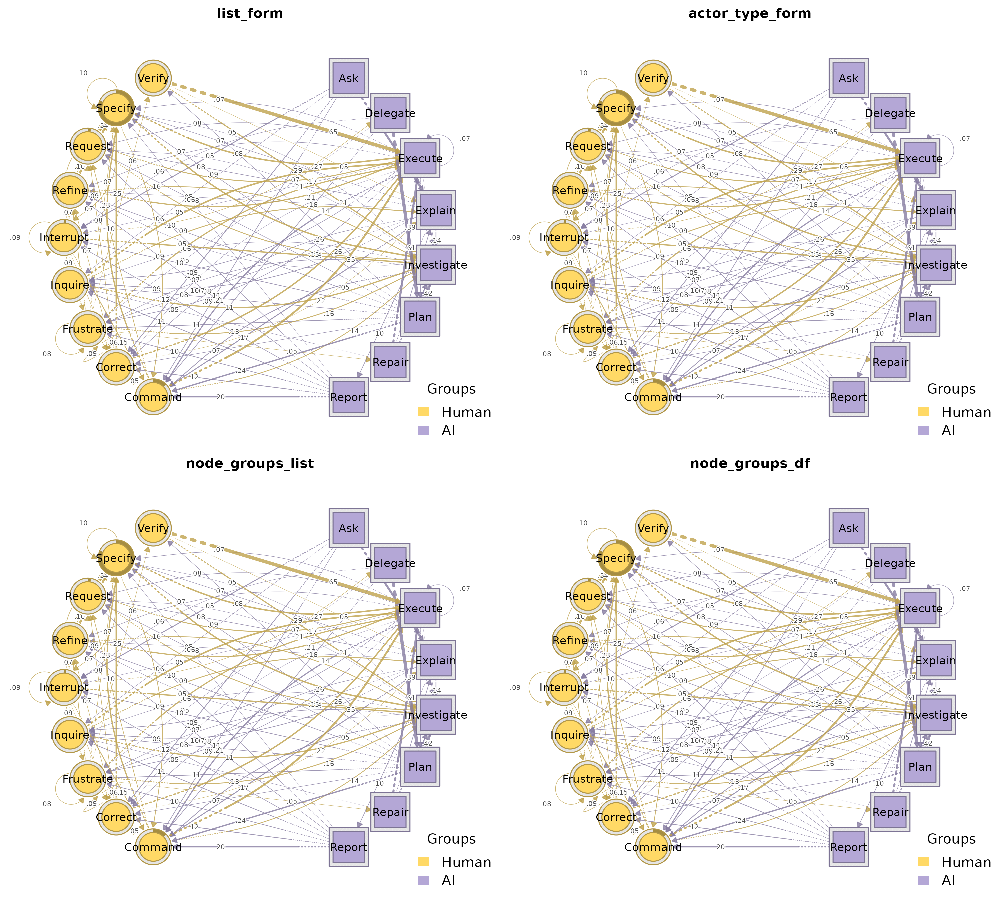
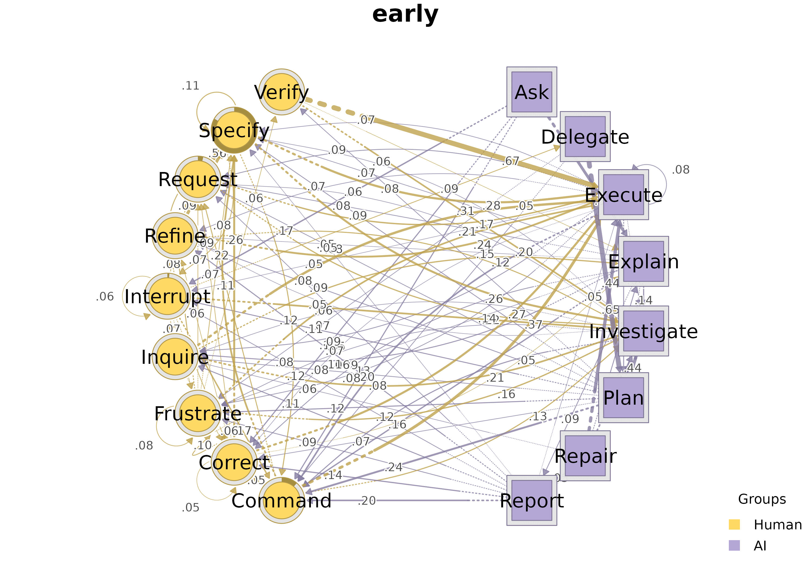
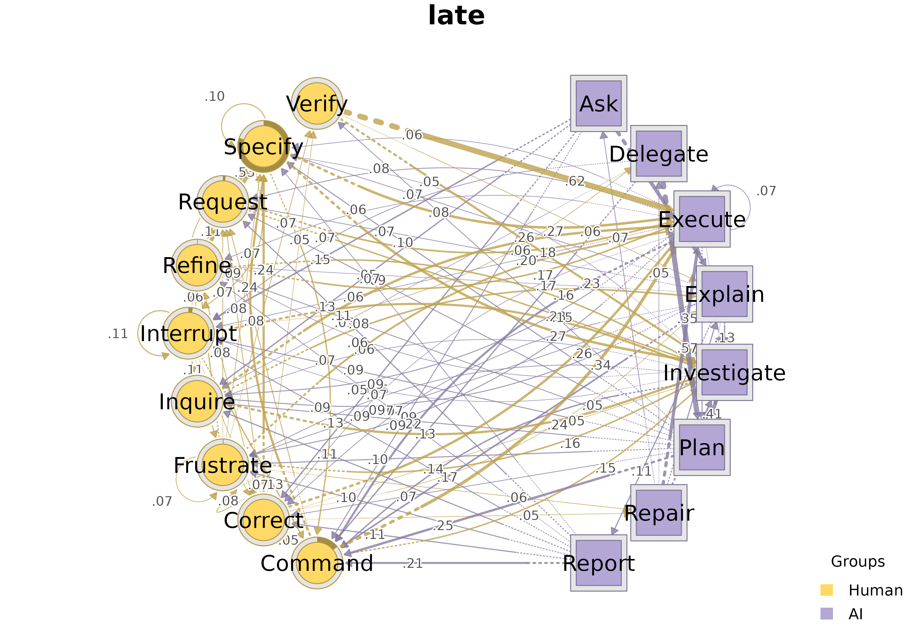

build_htna() accepts data in three
interchangeable shapes: a named list of per-actor frames, a
single combined frame with an actor-type column, or a single combined
frame with a node-to-actor lookup. This vignette walks through each form
using Nestimate’s human_long +
ai_long example and verifies that all three produce the
same network, then covers two more parameters that compose with any
input form: actor (forwarded to
Nestimate::build_network()) and disambiguate
(for code-label collisions).
Setup
Both frames share the canonical schema htna expects:
session_id, code,
order_in_session. Within each session,
order_in_session is a shared time index
across both actors — Human’s events occupy the odd positions, AI’s the
even ones — so concatenating and sorting recovers the temporal
interleaving.
Form 1 — Named list of per-actor frames
The most direct form. Each entry is one actor’s long frame; the list name becomes the actor-type label on the network.
net_list <- build_htna(list(Human = human_long, AI = ai_long))
summary(net_list)
#> <htna network>
#> Method: relative
#> Sessions: 429 (max 287 timesteps)
#> Nodes: 17
#> Edges: 246 / 289 (non-zero)
#>
#> Actor types (2):
#> Human (9 nodes): Command, Correct, Frustrate, Inquire, Interrupt, Refine, Request, Specify, Verify
#> AI (8 nodes): Ask, Delegate, Execute, Explain, Investigate, Plan, Repair, Report
#>
#> Edge counts by actor (rows = source, cols = target):
#> Human AI
#> Human 72 65
#> AI 71 38
plot_htna(net_list)
Use this form when each actor’s data lives in a separate frame (the typical case when the two streams were prepared independently).
Form 2 — Single combined frame with actor_type
When the data already arrives as one long table, tag each row with
the actor-type and pass the column name to
actor_type =.
combined <- rbind(
cbind(actor_type = "Human", human_long[, c("session_id", "code",
"order_in_session")]),
cbind(actor_type = "AI", ai_long[, c("session_id", "code",
"order_in_session")])
)
combined$actor_type <- factor(combined$actor_type, levels = c("Human", "AI"))
combined <- combined[order(combined$session_id, combined$order_in_session), ]
head(combined)
#> actor_type session_id code order_in_session
#> 1 Human 0086cabebd15 Specify 1
#> 2 Human 0086cabebd15 Command 2
#> 3 Human 0086cabebd15 Specify 3
#> 4 Human 0086cabebd15 Interrupt 4
#> 10797 AI 0086cabebd15 Delegate 5
#> 10798 AI 0086cabebd15 Plan 6
net_actor_type <- build_htna(combined, actor_type = "actor_type")The actor-type order on the resulting network follows the factor levels (or, for character vectors, the order of first appearance), which is how the actor groups will be ordered in legends and plots.
Form 3 — Single combined frame with node_groups
When the combined frame has no actor-type column,
declare the node-to-actor partition directly via
node_groups. node_groups accepts two
interchangeable shapes:
3a. Named list of code vectors
human_codes <- unique(human_long$code)
ai_codes <- unique(ai_long$code)
net_node_groups <- build_htna(
combined[, c("session_id", "code", "order_in_session")],
node_groups = list(Human = human_codes, AI = ai_codes)
)3b. Two-column data frame (codebook)
The same partition expressed as a tidy codebook — one row per code,
one column for the action and one for the actor type. The action column
must match the action parameter (default
"code"); the other column is treated as the actor-type tag.
Column order is irrelevant.
codebook <- data.frame(
code = c(human_codes, ai_codes),
actor_type = c(rep("Human", length(human_codes)),
rep("AI", length(ai_codes))),
stringsAsFactors = FALSE
)
head(codebook)
#> code actor_type
#> 1 Specify Human
#> 2 Command Human
#> 3 Interrupt Human
#> 4 Verify Human
#> 5 Frustrate Human
#> 6 Inquire Human
net_node_groups_df <- build_htna(
combined[, c("session_id", "code", "order_in_session")],
node_groups = codebook
)The actor-type ordering follows the column’s factor levels (if a factor) or the order of first appearance (if a character vector). Use this form when your code/actor mapping already lives in a tidy lookup table.
All forms produce the same network
build_htna() resolves every input shape to the same
combined sequence and forwards to
Nestimate::build_network(). The four networks below are
drawn side by side — the layout, colours, and edges are
indistinguishable:
forms <- list(
list_form = net_list,
actor_type_form = net_actor_type,
node_groups_list = net_node_groups,
node_groups_df = net_node_groups_df
)
op <- par(mfrow = c(2, 2), mar = c(1, 1, 3, 1))
for (nm in names(forms)) plot_htna(forms[[nm]], title = nm)
par(op)A one-line sanity check confirms that the edge-weight matrices match the named-list reference cell-for-cell:
Handling code-label collisions with disambiguate =
If both actor types share a code label (e.g. both Human and AI have a
code called Ask), build_htna() errors by
default — keeping such states distinct is usually what you want. Pass
disambiguate = TRUE to prefix every code with its
actor-type label so the two Ask nodes become
Human:Ask and AI:Ask.
overlap <- data.frame(
session_id = rep(paste0("s", 1:3), each = 6),
code = rep(c("Ask", "Reply", "Ask", "Reply", "Ask", "Reply"), 3),
actor_type = rep(c("Human", "Human", "AI", "AI", "Human", "AI"), 3),
order_in_session = rep(1:6, 3),
stringsAsFactors = FALSE
)
# Without disambiguate=, this errors:
try(build_htna(overlap, actor_type = "actor_type"))
#> Error : Code(s) appear in more than one actor group: Ask, Reply. Pass `disambiguate = TRUE` to prefix codes with the actor label.
# With disambiguate=, the two `Ask`s become distinct nodes:
net_dis <- build_htna(overlap, actor_type = "actor_type",
disambiguate = TRUE)
net_dis$nodes$label
#> [1] "AI:Ask" "AI:Reply" "Human:Ask" "Human:Reply"Splitting into cohorts with group =
Any of the three input forms can additionally be split into
per-cohort networks by passing group = — the result is an
htna_group, one htna network per level of the
grouping column. Below we synthesise a “phase” cohort variable on the
combined frame and let build_htna() build one network per
phase.
combined$phase <- ifelse(combined$session_id < median(combined$session_id),
"early", "late")
grp <- build_htna(combined, actor_type = "actor_type", group = "phase")
class(grp)
#> [1] "htna_group" "netobject_group" "list"
names(grp)
#> [1] "early" "late"
plot_htna(grp)

Cheat sheet
| Form | When to use |
|---|---|
list(Human = h, AI = a) |
Each actor’s data is in its own frame |
df, actor_type = "actor_type" |
One combined frame, actor identity in a row-level column |
df, node_groups = list(Human = ..., AI = ...) |
One combined frame; partition declared as a named list of codes |
df, node_groups = data.frame(code = ..., actor_type = ...) |
One combined frame; partition declared as a tidy codebook |
+ actor = "user_id" |
Identify the individual actor that performed each event (forwarded
to Nestimate::build_network()) |
+ disambiguate = TRUE |
Same code label appears in more than one actor type |
+ group = "phase" |
Build one network per cohort/phase |
All three input shapes are interchangeable; pick whichever matches the shape your data already has.